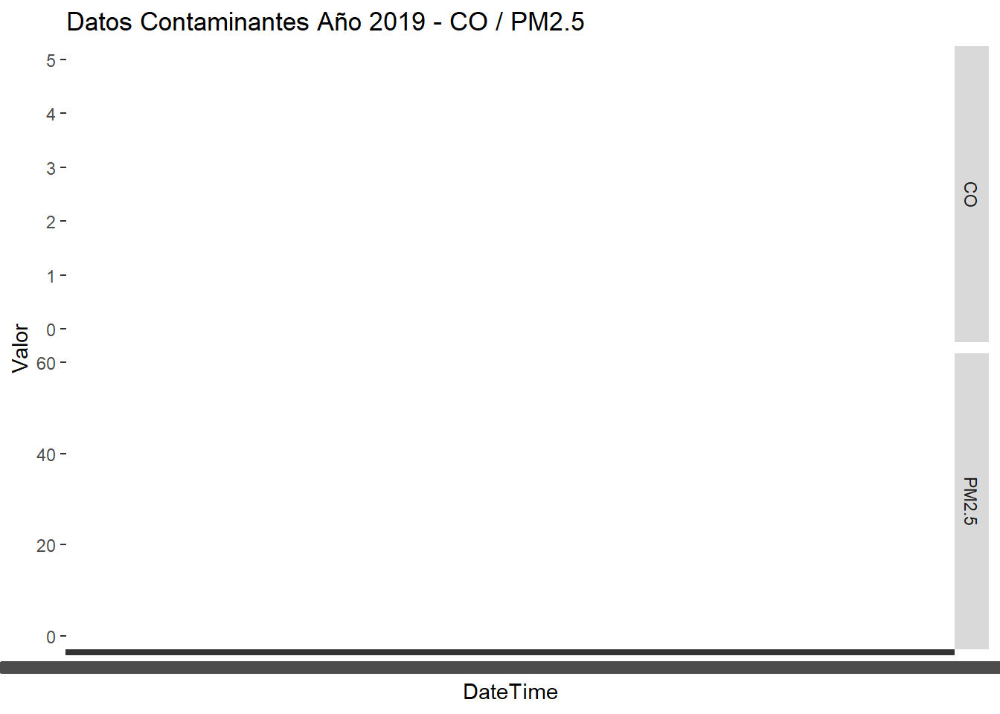

Chapter 6 Documento Bookdown - Propuesta avance 6
Combinar métodos autorregresivos y de aprendizaje estadístico mediante el enfoque de la clasificación para analizar datos de series de tiempo. Aplicar el algoritmo Facebook´s Prophet, y si es viable la justificación para la variable en serie de tiempo vista como una regresión. Esto último, complementa los modelos planteados anteriormente y el ajuste a un modelo lineal y estacionario.
## ── Attaching packages ────────────────────────────────────────────── fpp3 0.5 ──## ✔ tibble 3.2.1 ✔ tsibbledata 0.4.1
## ✔ dplyr 1.1.4 ✔ feasts 0.3.2
## ✔ tidyr 1.3.1 ✔ fable 0.3.4
## ✔ lubridate 1.9.3 ✔ fabletools 0.4.2
## ✔ tsibble 1.1.4## ── Conflicts ───────────────────────────────────────────────── fpp3_conflicts ──
## ✖ lubridate::date() masks base::date()
## ✖ dplyr::filter() masks stats::filter()
## ✖ tsibble::intersect() masks base::intersect()
## ✖ tsibble::interval() masks lubridate::interval()
## ✖ dplyr::lag() masks stats::lag()
## ✖ tsibble::setdiff() masks base::setdiff()
## ✖ tsibble::union() masks base::union()library(readxl)
datos_2019_CentroAltoRendimiento <- read_excel("C:/Users/ALVARO ARIZA/Desktop/Maestria Javeriana/SERIES DE TIEMPO/ACTIVIDAD 4/datos_2019_CentroAltoRendimiento.xlsx")
View(datos_2019_CentroAltoRendimiento)datos_2019_CentroAltoRendimiento %>%
pivot_longer(c(PM2.5, CO),
names_to = "var", values_to = "value") %>%
ggplot(aes(x = DateTime, y = value)) +
geom_line() +
facet_grid(vars(var), scales = "free_y") +
labs(title = "Datos Contaminantes Año 2019 - CO / PM2.5",
y = "Valor")## `geom_line()`: Each group consists of only one observation.
## ℹ Do you need to adjust the group aesthetic?
## `geom_line()`: Each group consists of only one observation.
## ℹ Do you need to adjust the group aesthetic?
## Registered S3 method overwritten by 'quantmod':
## method from
## as.zoo.data.frame zoo## Cargando paquete requerido: xts## Cargando paquete requerido: zoo##
## Adjuntando el paquete: 'zoo'## The following object is masked from 'package:tsibble':
##
## index## The following objects are masked from 'package:base':
##
## as.Date, as.Date.numeric##
## ######################### Warning from 'xts' package ##########################
## # #
## # The dplyr lag() function breaks how base R's lag() function is supposed to #
## # work, which breaks lag(my_xts). Calls to lag(my_xts) that you type or #
## # source() into this session won't work correctly. #
## # #
## # Use stats::lag() to make sure you're not using dplyr::lag(), or you can add #
## # conflictRules('dplyr', exclude = 'lag') to your .Rprofile to stop #
## # dplyr from breaking base R's lag() function. #
## # #
## # Code in packages is not affected. It's protected by R's namespace mechanism #
## # Set `options(xts.warn_dplyr_breaks_lag = FALSE)` to suppress this warning. #
## # #
## #################################################################################
## Adjuntando el paquete: 'xts'## The following objects are masked from 'package:dplyr':
##
## first, last## Cargando paquete requerido: TTR## Cargando paquete requerido: Rcpp## Cargando paquete requerido: rlang